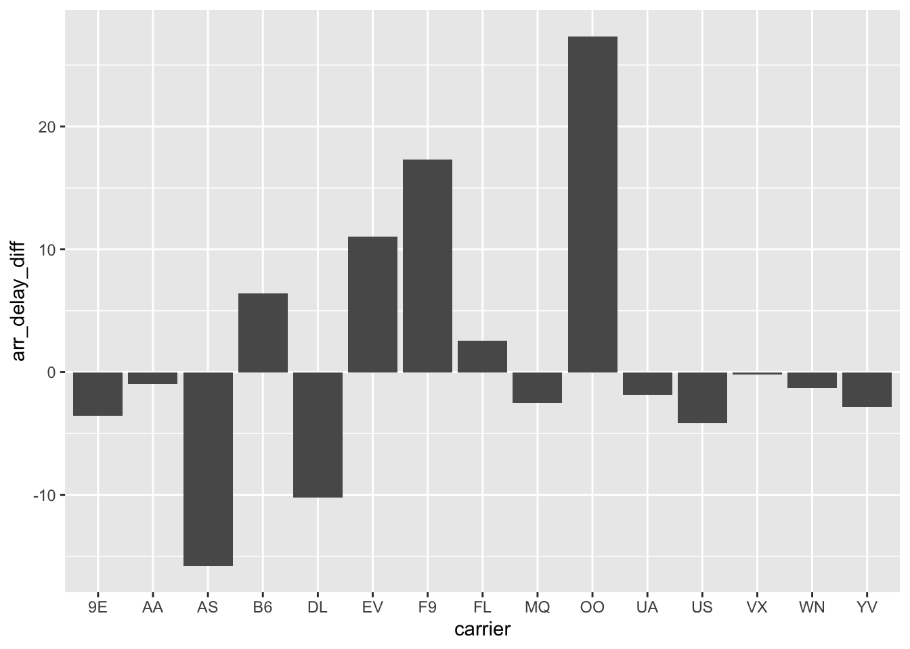
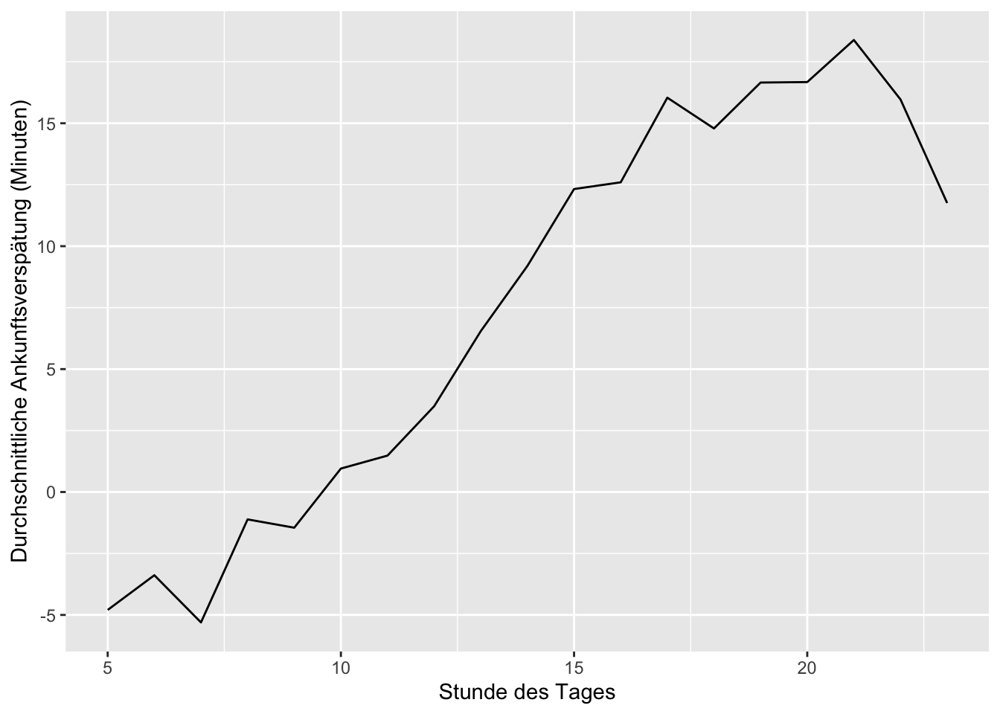

library(nycflights13)
library(tidyverse)## ── Attaching core tidyverse packages ────────────────────────────────────── tidyverse 2.0.0 ──
## ✔ dplyr 1.1.1 ✔ readr 2.1.4
## ✔ forcats 1.0.0 ✔ stringr 1.5.0
## ✔ ggplot2 3.4.2 ✔ tibble 3.2.1
## ✔ lubridate 1.9.2 ✔ tidyr 1.3.0
## ✔ purrr 1.0.1
## ── Conflicts ──────────────────────────────────────────────────────── tidyverse_conflicts() ──
## ✖ dplyr::filter() masks stats::filter()
## ✖ dplyr::lag() masks stats::lag()
## ℹ Use the conflicted package (<http://conflicted.r-lib.org/>) to force all conflicts to become errorsFinde in einer einzelnen Pipeline alle Flüge, die jeweils die eine genannte Bedingungen erfüllen:
Hatten eine Ankunftsverspätung von zwei oder mehr Stunden
flights %>%
filter(arr_delay >= 120)## # A tibble: 10,200 × 19
## year month day dep_time sched_dep_time dep_delay arr_time sched_arr_time
## <int> <int> <int> <int> <int> <dbl> <int> <int>
## 1 2013 1 1 811 630 101 1047 830
## 2 2013 1 1 848 1835 853 1001 1950
## 3 2013 1 1 957 733 144 1056 853
## 4 2013 1 1 1114 900 134 1447 1222
## 5 2013 1 1 1505 1310 115 1638 1431
## 6 2013 1 1 1525 1340 105 1831 1626
## 7 2013 1 1 1549 1445 64 1912 1656
## 8 2013 1 1 1558 1359 119 1718 1515
## 9 2013 1 1 1732 1630 62 2028 1825
## 10 2013 1 1 1803 1620 103 2008 1750
## # ℹ 10,190 more rows
## # ℹ 11 more variables: arr_delay <dbl>, carrier <chr>, flight <int>,
## # tailnum <chr>, origin <chr>, dest <chr>, air_time <dbl>, distance <dbl>,
## # hour <dbl>, minute <dbl>, time_hour <dttm>Fliegen nach Houston (IAH oder HOU)
flights %>%
filter(dest %in% c("IAH", "HOU"))## # A tibble: 9,313 × 19
## year month day dep_time sched_dep_time dep_delay arr_time sched_arr_time
## <int> <int> <int> <int> <int> <dbl> <int> <int>
## 1 2013 1 1 517 515 2 830 819
## 2 2013 1 1 533 529 4 850 830
## 3 2013 1 1 623 627 -4 933 932
## 4 2013 1 1 728 732 -4 1041 1038
## 5 2013 1 1 739 739 0 1104 1038
## 6 2013 1 1 908 908 0 1228 1219
## 7 2013 1 1 1028 1026 2 1350 1339
## 8 2013 1 1 1044 1045 -1 1352 1351
## 9 2013 1 1 1114 900 134 1447 1222
## 10 2013 1 1 1205 1200 5 1503 1505
## # ℹ 9,303 more rows
## # ℹ 11 more variables: arr_delay <dbl>, carrier <chr>, flight <int>,
## # tailnum <chr>, origin <chr>, dest <chr>, air_time <dbl>, distance <dbl>,
## # hour <dbl>, minute <dbl>, time_hour <dttm>Wurden von United, American oder Delta durchgeführt
flights %>%
filter(carrier %in% c("UA", "AA", "DL"))## # A tibble: 139,504 × 19
## year month day dep_time sched_dep_time dep_delay arr_time sched_arr_time
## <int> <int> <int> <int> <int> <dbl> <int> <int>
## 1 2013 1 1 517 515 2 830 819
## 2 2013 1 1 533 529 4 850 830
## 3 2013 1 1 542 540 2 923 850
## 4 2013 1 1 554 600 -6 812 837
## 5 2013 1 1 554 558 -4 740 728
## 6 2013 1 1 558 600 -2 753 745
## 7 2013 1 1 558 600 -2 924 917
## 8 2013 1 1 558 600 -2 923 937
## 9 2013 1 1 559 600 -1 941 910
## 10 2013 1 1 559 600 -1 854 902
## # ℹ 139,494 more rows
## # ℹ 11 more variables: arr_delay <dbl>, carrier <chr>, flight <int>,
## # tailnum <chr>, origin <chr>, dest <chr>, air_time <dbl>, distance <dbl>,
## # hour <dbl>, minute <dbl>, time_hour <dttm>Sind im Sommer abgeflogen (Juli, August und September)
flights %>%
filter(month %in% c(7, 8, 9))## # A tibble: 86,326 × 19
## year month day dep_time sched_dep_time dep_delay arr_time sched_arr_time
## <int> <int> <int> <int> <int> <dbl> <int> <int>
## 1 2013 7 1 1 2029 212 236 2359
## 2 2013 7 1 2 2359 3 344 344
## 3 2013 7 1 29 2245 104 151 1
## 4 2013 7 1 43 2130 193 322 14
## 5 2013 7 1 44 2150 174 300 100
## 6 2013 7 1 46 2051 235 304 2358
## 7 2013 7 1 48 2001 287 308 2305
## 8 2013 7 1 58 2155 183 335 43
## 9 2013 7 1 100 2146 194 327 30
## 10 2013 7 1 100 2245 135 337 135
## # ℹ 86,316 more rows
## # ℹ 11 more variables: arr_delay <dbl>, carrier <chr>, flight <int>,
## # tailnum <chr>, origin <chr>, dest <chr>, air_time <dbl>, distance <dbl>,
## # hour <dbl>, minute <dbl>, time_hour <dttm>Sind mehr als zwei Stunden zu spät angekommen, sind aber nicht zu spät abgeflogen
flights %>%
filter(arr_delay > 120 & dep_delay <= 0)## # A tibble: 29 × 19
## year month day dep_time sched_dep_time dep_delay arr_time sched_arr_time
## <int> <int> <int> <int> <int> <dbl> <int> <int>
## 1 2013 1 27 1419 1420 -1 1754 1550
## 2 2013 10 7 1350 1350 0 1736 1526
## 3 2013 10 7 1357 1359 -2 1858 1654
## 4 2013 10 16 657 700 -3 1258 1056
## 5 2013 11 1 658 700 -2 1329 1015
## 6 2013 3 18 1844 1847 -3 39 2219
## 7 2013 4 17 1635 1640 -5 2049 1845
## 8 2013 4 18 558 600 -2 1149 850
## 9 2013 4 18 655 700 -5 1213 950
## 10 2013 5 22 1827 1830 -3 2217 2010
## # ℹ 19 more rows
## # ℹ 11 more variables: arr_delay <dbl>, carrier <chr>, flight <int>,
## # tailnum <chr>, origin <chr>, dest <chr>, air_time <dbl>, distance <dbl>,
## # hour <dbl>, minute <dbl>, time_hour <dttm>Waren um mindestens eine Stunde verspätet, haben aber während des Fluges mehr als 30 Minuten aufgeholt
flights %>%
filter(dep_delay >= 60 & (dep_delay - arr_delay) > 30)## # A tibble: 1,844 × 19
## year month day dep_time sched_dep_time dep_delay arr_time sched_arr_time
## <int> <int> <int> <int> <int> <dbl> <int> <int>
## 1 2013 1 1 2205 1720 285 46 2040
## 2 2013 1 1 2326 2130 116 131 18
## 3 2013 1 3 1503 1221 162 1803 1555
## 4 2013 1 3 1839 1700 99 2056 1950
## 5 2013 1 3 1850 1745 65 2148 2120
## 6 2013 1 3 1941 1759 102 2246 2139
## 7 2013 1 3 1950 1845 65 2228 2227
## 8 2013 1 3 2015 1915 60 2135 2111
## 9 2013 1 3 2257 2000 177 45 2224
## 10 2013 1 4 1917 1700 137 2135 1950
## # ℹ 1,834 more rows
## # ℹ 11 more variables: arr_delay <dbl>, carrier <chr>, flight <int>,
## # tailnum <chr>, origin <chr>, dest <chr>, air_time <dbl>, distance <dbl>,
## # hour <dbl>, minute <dbl>, time_hour <dttm>Sortiere die Flüge, um die Flüge mit den längsten Abflugverspätungen zu finden. Finde die Flüge, die am frühesten am Morgen abgeflogen sind.
flights %>%
arrange(desc(dep_delay))## # A tibble: 336,776 × 19
## year month day dep_time sched_dep_time dep_delay arr_time sched_arr_time
## <int> <int> <int> <int> <int> <dbl> <int> <int>
## 1 2013 1 9 641 900 1301 1242 1530
## 2 2013 6 15 1432 1935 1137 1607 2120
## 3 2013 1 10 1121 1635 1126 1239 1810
## 4 2013 9 20 1139 1845 1014 1457 2210
## 5 2013 7 22 845 1600 1005 1044 1815
## 6 2013 4 10 1100 1900 960 1342 2211
## 7 2013 3 17 2321 810 911 135 1020
## 8 2013 6 27 959 1900 899 1236 2226
## 9 2013 7 22 2257 759 898 121 1026
## 10 2013 12 5 756 1700 896 1058 2020
## # ℹ 336,766 more rows
## # ℹ 11 more variables: arr_delay <dbl>, carrier <chr>, flight <int>,
## # tailnum <chr>, origin <chr>, dest <chr>, air_time <dbl>, distance <dbl>,
## # hour <dbl>, minute <dbl>, time_hour <dttm>flights %>%
arrange(dep_time)## # A tibble: 336,776 × 19
## year month day dep_time sched_dep_time dep_delay arr_time sched_arr_time
## <int> <int> <int> <int> <int> <dbl> <int> <int>
## 1 2013 1 13 1 2249 72 108 2357
## 2 2013 1 31 1 2100 181 124 2225
## 3 2013 11 13 1 2359 2 442 440
## 4 2013 12 16 1 2359 2 447 437
## 5 2013 12 20 1 2359 2 430 440
## 6 2013 12 26 1 2359 2 437 440
## 7 2013 12 30 1 2359 2 441 437
## 8 2013 2 11 1 2100 181 111 2225
## 9 2013 2 24 1 2245 76 121 2354
## 10 2013 3 8 1 2355 6 431 440
## # ℹ 336,766 more rows
## # ℹ 11 more variables: arr_delay <dbl>, carrier <chr>, flight <int>,
## # tailnum <chr>, origin <chr>, dest <chr>, air_time <dbl>, distance <dbl>,
## # hour <dbl>, minute <dbl>, time_hour <dttm>Sortiere die Flüge, um die schnellsten Flüge zu finden. (Tipp: Versuche eine mathematische Berechnung in deiner Funktion zu verwenden.)
flights %>%
arrange(desc(distance / air_time * 60))## # A tibble: 336,776 × 19
## year month day dep_time sched_dep_time dep_delay arr_time sched_arr_time
## <int> <int> <int> <int> <int> <dbl> <int> <int>
## 1 2013 5 25 1709 1700 9 1923 1937
## 2 2013 7 2 1558 1513 45 1745 1719
## 3 2013 5 13 2040 2025 15 2225 2226
## 4 2013 3 23 1914 1910 4 2045 2043
## 5 2013 1 12 1559 1600 -1 1849 1917
## 6 2013 11 17 650 655 -5 1059 1150
## 7 2013 2 21 2355 2358 -3 412 438
## 8 2013 11 17 759 800 -1 1212 1255
## 9 2013 11 16 2003 1925 38 17 36
## 10 2013 11 16 2349 2359 -10 402 440
## # ℹ 336,766 more rows
## # ℹ 11 more variables: arr_delay <dbl>, carrier <chr>, flight <int>,
## # tailnum <chr>, origin <chr>, dest <chr>, air_time <dbl>, distance <dbl>,
## # hour <dbl>, minute <dbl>, time_hour <dttm>Wenn man die Geschwindigkeit noch sehen möchte:
flights %>%
mutate(speed = (distance * 1.609 / air_time * 60)) %>%
arrange(speed) %>%
relocate(speed)## # A tibble: 336,776 × 20
## speed year month day dep_time sched_dep_time dep_delay arr_time
## <dbl> <int> <int> <int> <int> <int> <dbl> <int>
## 1 124. 2013 1 28 1917 1825 52 2118
## 2 136. 2013 6 29 755 800 -5 1035
## 3 149. 2013 8 28 932 940 -8 1116
## 4 154. 2013 1 30 1037 955 42 1221
## 5 154. 2013 11 27 556 600 -4 727
## 6 154. 2013 5 21 558 600 -2 721
## 7 157. 2013 12 9 1540 1535 5 1720
## 8 158. 2013 6 10 1356 1300 56 1646
## 9 163. 2013 7 28 1322 1325 -3 1612
## 10 165. 2013 4 11 1349 1345 4 1542
## # ℹ 336,766 more rows
## # ℹ 12 more variables: sched_arr_time <int>, arr_delay <dbl>, carrier <chr>,
## # flight <int>, tailnum <chr>, origin <chr>, dest <chr>, air_time <dbl>,
## # distance <dbl>, hour <dbl>, minute <dbl>, time_hour <dttm>Welche Flüge sind die weiteste Strecke geflogen? Welche haben die kürzeste Strecke zurückgelegt?
flights %>%
arrange(desc(distance))## # A tibble: 336,776 × 19
## year month day dep_time sched_dep_time dep_delay arr_time sched_arr_time
## <int> <int> <int> <int> <int> <dbl> <int> <int>
## 1 2013 1 1 857 900 -3 1516 1530
## 2 2013 1 2 909 900 9 1525 1530
## 3 2013 1 3 914 900 14 1504 1530
## 4 2013 1 4 900 900 0 1516 1530
## 5 2013 1 5 858 900 -2 1519 1530
## 6 2013 1 6 1019 900 79 1558 1530
## 7 2013 1 7 1042 900 102 1620 1530
## 8 2013 1 8 901 900 1 1504 1530
## 9 2013 1 9 641 900 1301 1242 1530
## 10 2013 1 10 859 900 -1 1449 1530
## # ℹ 336,766 more rows
## # ℹ 11 more variables: arr_delay <dbl>, carrier <chr>, flight <int>,
## # tailnum <chr>, origin <chr>, dest <chr>, air_time <dbl>, distance <dbl>,
## # hour <dbl>, minute <dbl>, time_hour <dttm>flights %>%
arrange(distance)## # A tibble: 336,776 × 19
## year month day dep_time sched_dep_time dep_delay arr_time sched_arr_time
## <int> <int> <int> <int> <int> <dbl> <int> <int>
## 1 2013 7 27 NA 106 NA NA 245
## 2 2013 1 3 2127 2129 -2 2222 2224
## 3 2013 1 4 1240 1200 40 1333 1306
## 4 2013 1 4 1829 1615 134 1937 1721
## 5 2013 1 4 2128 2129 -1 2218 2224
## 6 2013 1 5 1155 1200 -5 1241 1306
## 7 2013 1 6 2125 2129 -4 2224 2224
## 8 2013 1 7 2124 2129 -5 2212 2224
## 9 2013 1 8 2127 2130 -3 2304 2225
## 10 2013 1 9 2126 2129 -3 2217 2224
## # ℹ 336,766 more rows
## # ℹ 11 more variables: arr_delay <dbl>, carrier <chr>, flight <int>,
## # tailnum <chr>, origin <chr>, dest <chr>, air_time <dbl>, distance <dbl>,
## # hour <dbl>, minute <dbl>, time_hour <dttm>Spielt es eine Rolle, in welcher Reihenfolge du filter()
und arrange() verwendest, wenn du beide verwendest? Warum /
warum nicht? Denke über die Ergebnisse und die Arbeit nach, die die
Funktionen leisten müssten.
Lösung Ja, die Reihenfolge der Verwendung von
filter() und arrange() in R spielt eine Rolle
und kann zu unterschiedlichen Ergebnissen führen. Wenn du
filter() vor arrange() verwendest, wird dein
Datensatz zuerst nach den Filterbedingungen reduziert und dann sortiert.
Das bedeutet, dass alle Filterbedingungen in den sortierten Zeilen
beibehalten werden. Wenn du jedoch arrange() vor
filter() verwendest, werden zuerst die Zeilen sortiert und
dann die Filterbedingungen angewendet. In diesem Fall können einige der
ursprünglichen Filterbedingungen verletzt werden und nicht mehr erfüllt
werden.
Ein Beispiel: Du hast einen Datensatz mit Personen und möchtest nur
diejenigen behalten, die in einem bestimmten Alter sind und dann nach
Namen sortieren. Die richtige Reihenfolge wäre filter() und
dann arrange(). Wenn du jedoch zuerst nach Namen sortierst
und dann nach Alter filterst, können Personen im Ergebnis enthalten
sein, die nicht dem ursprünglichen Filterkriterium entsprechen.
Letztendlich hängt die richtige Reihenfolge von der Analyse ab, die du durchführen möchtest, und von den Anforderungen deiner Daten. Wenn du unsicher bist, welche Reihenfolge für deine spezifische Analyse am besten geeignet ist, probiere beide Methoden aus und vergleiche die Ergebnisse, um die beste Option für deine Bedürfnisse zu wählen.
Vergleiche dep_time, sched_dep_time, und dep_delay. Welchen Zusammenhang erwartest du zwischen diesen drei Zahlen?
flights %>%
select(dep_time, sched_dep_time, dep_delay)## # A tibble: 336,776 × 3
## dep_time sched_dep_time dep_delay
## <int> <int> <dbl>
## 1 517 515 2
## 2 533 529 4
## 3 542 540 2
## 4 544 545 -1
## 5 554 600 -6
## 6 554 558 -4
## 7 555 600 -5
## 8 557 600 -3
## 9 557 600 -3
## 10 558 600 -2
## # ℹ 336,766 more rowsdep_time bezieht sich auf die tatsächliche Abflugzeit eines Fluges, während sched_dep_time die geplante Abflugzeit angibt. Der dep_delay gibt die Verspätung bei der Abflugzeit an, die als Differenz zwischen dep_time und sched_dep_time berechnet wird.
In Bezug auf den Zusammenhang zwischen diesen drei Variablen können wir erwarten, dass, wenn ein Flugzeug gemäß dem geplanten Zeitplan abfliegt, dep_delay gleich Null sein wird, da die Differenz zwischen dep_time und sched_dep_time Null sein wird. Wenn jedoch ein Flugzeug später als geplant abfliegt, wird dep_delay positiv sein, was bedeutet, dass der Abflug verzögert war.
Insgesamt können wir also sagen, dass dep_time und sched_dep_time direkt mit dep_delay verbunden sind. Wenn ein Flug später als geplant abfliegt, wird die Abflugzeit (dep_time) später als die geplante Abflugzeit (sched_dep_time) sein, was zu einer positiven dep_delay führt.
Überlege dir so viele Möglichkeiten wie möglich, um dep_time, dep_delay, arr_time und arr_delay aus flights auszuwählen.
select(flights, dep_time, dep_delay, arr_time, arr_delay)## # A tibble: 336,776 × 4
## dep_time dep_delay arr_time arr_delay
## <int> <dbl> <int> <dbl>
## 1 517 2 830 11
## 2 533 4 850 20
## 3 542 2 923 33
## 4 544 -1 1004 -18
## 5 554 -6 812 -25
## 6 554 -4 740 12
## 7 555 -5 913 19
## 8 557 -3 709 -14
## 9 557 -3 838 -8
## 10 558 -2 753 8
## # ℹ 336,766 more rowsselect(flights, "dep_time", "dep_delay", "arr_time", "arr_delay")## # A tibble: 336,776 × 4
## dep_time dep_delay arr_time arr_delay
## <int> <dbl> <int> <dbl>
## 1 517 2 830 11
## 2 533 4 850 20
## 3 542 2 923 33
## 4 544 -1 1004 -18
## 5 554 -6 812 -25
## 6 554 -4 740 12
## 7 555 -5 913 19
## 8 557 -3 709 -14
## 9 557 -3 838 -8
## 10 558 -2 753 8
## # ℹ 336,766 more rowsselect(flights, 4, 6, 7, 9)## # A tibble: 336,776 × 4
## dep_time dep_delay arr_time arr_delay
## <int> <dbl> <int> <dbl>
## 1 517 2 830 11
## 2 533 4 850 20
## 3 542 2 923 33
## 4 544 -1 1004 -18
## 5 554 -6 812 -25
## 6 554 -4 740 12
## 7 555 -5 913 19
## 8 557 -3 709 -14
## 9 557 -3 838 -8
## 10 558 -2 753 8
## # ℹ 336,766 more rowsselect(flights, all_of(c("dep_time", "dep_delay", "arr_time", "arr_delay")))## # A tibble: 336,776 × 4
## dep_time dep_delay arr_time arr_delay
## <int> <dbl> <int> <dbl>
## 1 517 2 830 11
## 2 533 4 850 20
## 3 542 2 923 33
## 4 544 -1 1004 -18
## 5 554 -6 812 -25
## 6 554 -4 740 12
## 7 555 -5 913 19
## 8 557 -3 709 -14
## 9 557 -3 838 -8
## 10 558 -2 753 8
## # ℹ 336,766 more rowsselect(flights, any_of(c("dep_time", "dep_delay", "arr_time", "arr_delay")))## # A tibble: 336,776 × 4
## dep_time dep_delay arr_time arr_delay
## <int> <dbl> <int> <dbl>
## 1 517 2 830 11
## 2 533 4 850 20
## 3 542 2 923 33
## 4 544 -1 1004 -18
## 5 554 -6 812 -25
## 6 554 -4 740 12
## 7 555 -5 913 19
## 8 557 -3 709 -14
## 9 557 -3 838 -8
## 10 558 -2 753 8
## # ℹ 336,766 more rowsvariables <- c("dep_time", "dep_delay", "arr_time", "arr_delay")
select(flights, all_of(variables))## # A tibble: 336,776 × 4
## dep_time dep_delay arr_time arr_delay
## <int> <dbl> <int> <dbl>
## 1 517 2 830 11
## 2 533 4 850 20
## 3 542 2 923 33
## 4 544 -1 1004 -18
## 5 554 -6 812 -25
## 6 554 -4 740 12
## 7 555 -5 913 19
## 8 557 -3 709 -14
## 9 557 -3 838 -8
## 10 558 -2 753 8
## # ℹ 336,766 more rowsWas passiert, wenn man den Namen der gleichen Variable mehrmals in einem select()-Aufruf angibt? nichts
flights %>%
select(-c(year, year))## # A tibble: 336,776 × 18
## month day dep_time sched_dep_time dep_delay arr_time sched_arr_time
## <int> <int> <int> <int> <dbl> <int> <int>
## 1 1 1 517 515 2 830 819
## 2 1 1 533 529 4 850 830
## 3 1 1 542 540 2 923 850
## 4 1 1 544 545 -1 1004 1022
## 5 1 1 554 600 -6 812 837
## 6 1 1 554 558 -4 740 728
## 7 1 1 555 600 -5 913 854
## 8 1 1 557 600 -3 709 723
## 9 1 1 557 600 -3 838 846
## 10 1 1 558 600 -2 753 745
## # ℹ 336,766 more rows
## # ℹ 11 more variables: arr_delay <dbl>, carrier <chr>, flight <int>,
## # tailnum <chr>, origin <chr>, dest <chr>, air_time <dbl>, distance <dbl>,
## # hour <dbl>, minute <dbl>, time_hour <dttm>Was macht die Funktion any_of()?Warum könnte sie in Verbindung mit diesem Vektor hilfreich sein?
Lösung Die Funktion any_of() ist eine Funktion aus dem Paket dplyr, die verwendet wird, um eine Zeichenfolge (z. B. den Namen einer Variablen) mit einem Vektor von Spaltennamen zu vergleichen. Die Funktion gibt TRUE zurück, wenn die Zeichenfolge mit mindestens einem der Elemente des Vektors übereinstimmt, andernfalls gibt sie FALSE zurück.
In Verbindung mit dem gegebenen Vektor variables <- c(“year”, “month”, “day”, “dep_delay”, “arr_delay”) kann die Funktion any_of() verwendet werden, um zu überprüfen, ob eine bestimmte Spalte in einem Datensatz enthalten ist. Zum Beispiel, wenn wir einen Datensatz haben, der diese Spalten enthält, können wir mit der any_of()-Funktion überprüfen, ob eine bestimmte Spalte enthalten ist, ohne jeden Spaltennamen einzeln zu überprüfen.
Hier ist ein Beispiel, wie man die any_of()-Funktion verwenden könnte, um zu überprüfen, ob ein Datensatz Spalten mit den Namen aus dem Vektor variables enthält:
# Vektor von Spaltennamen
variables <- c("year", "month", "day", "dep_delay", "arr_delay")
# Auswählen der Spalten aus dem Datenrahmen, die in dem Vektor von Spaltennamen enthalten sind
selected_columns <- flights %>%
select(any_of(variables))
# Ergebnis
selected_columns## # A tibble: 336,776 × 5
## year month day dep_delay arr_delay
## <int> <int> <int> <dbl> <dbl>
## 1 2013 1 1 2 11
## 2 2013 1 1 4 20
## 3 2013 1 1 2 33
## 4 2013 1 1 -1 -18
## 5 2013 1 1 -6 -25
## 6 2013 1 1 -4 12
## 7 2013 1 1 -5 19
## 8 2013 1 1 -3 -14
## 9 2013 1 1 -3 -8
## 10 2013 1 1 -2 8
## # ℹ 336,766 more rowsÜberrascht dich das Ergebnis des folgenden Codes? Wie gehen die Select-Helfer standardmäßig mit der Groß- und Kleinschreibung um? Wie kannst du diese Voreinstellung ändern?
flights %>% select(contains("TIME"))## # A tibble: 336,776 × 6
## dep_time sched_dep_time arr_time sched_arr_time air_time time_hour
## <int> <int> <int> <int> <dbl> <dttm>
## 1 517 515 830 819 227 2013-01-01 05:00:00
## 2 533 529 850 830 227 2013-01-01 05:00:00
## 3 542 540 923 850 160 2013-01-01 05:00:00
## 4 544 545 1004 1022 183 2013-01-01 05:00:00
## 5 554 600 812 837 116 2013-01-01 06:00:00
## 6 554 558 740 728 150 2013-01-01 05:00:00
## 7 555 600 913 854 158 2013-01-01 06:00:00
## 8 557 600 709 723 53 2013-01-01 06:00:00
## 9 557 600 838 846 140 2013-01-01 06:00:00
## 10 558 600 753 745 138 2013-01-01 06:00:00
## # ℹ 336,766 more rowsDie contains()-Funktion wählt alle Spalten aus, die einen bestimmten String in ihrem Namen enthalten. Die contains()-Funktion ist standardmäßig nicht casesensitive, d.h. sie unterscheidet nicht zwischen Groß- und Kleinschreibung. Das bedeutet, dass alle Spalten ausgewählt werden, die den String “TIME”, “time” oder “Time” im Namen enthalten.
Wenn Sie jedoch eine Funktion verwenden möchten, die casesensitive ist, können Sie die matches()-Funktion anstelle von contains() verwenden und einen regulären Ausdruck (Regex) als Argument übergeben, um die Groß- und Kleinschreibung zu steuern.
Benenne air_time in air_time_min um, um die Maßeinheiten anzugeben und verschiebe es an den Anfang des Datensatzes.
# air_time in air_time_min umbenennen und an den Anfang des Datensatzes verschieben
flights %>%
rename(air_time_min = air_time) %>%
relocate(air_time_min)## # A tibble: 336,776 × 19
## air_time_min year month day dep_time sched_dep_time dep_delay arr_time
## <dbl> <int> <int> <int> <int> <int> <dbl> <int>
## 1 227 2013 1 1 517 515 2 830
## 2 227 2013 1 1 533 529 4 850
## 3 160 2013 1 1 542 540 2 923
## 4 183 2013 1 1 544 545 -1 1004
## 5 116 2013 1 1 554 600 -6 812
## 6 150 2013 1 1 554 558 -4 740
## 7 158 2013 1 1 555 600 -5 913
## 8 53 2013 1 1 557 600 -3 709
## 9 140 2013 1 1 557 600 -3 838
## 10 138 2013 1 1 558 600 -2 753
## # ℹ 336,766 more rows
## # ℹ 11 more variables: sched_arr_time <int>, arr_delay <dbl>, carrier <chr>,
## # flight <int>, tailnum <chr>, origin <chr>, dest <chr>, distance <dbl>,
## # hour <dbl>, minute <dbl>, time_hour <dttm>Warum funktioniert das Folgende nicht, und was bedeutet der Fehler?
Lösung Der Code führt zu einem Fehler, weil Sie arrange() auf eine Spalte anwenden, die in der aktuellen Pipeline nicht vorhanden ist.
In Ihrer Pipeline haben Sie nur die Spalte tailnum ausgewählt und arrange() wurde auf dieser reduzierten Datenmenge angewendet. Da arr_delay nicht in den ausgewählten Spalten enthalten ist, gibt es eine Fehlermeldung, wenn arrange() versucht, den Datensatz basierend auf dieser Spalte zu ordnen.
Um den Fehler zu beheben, müssen Sie sicherstellen, dass arr_delay in der aktuellen Pipeline verfügbar ist. Sie können beispielsweise die Spalte arr_delay mit select() auswählen, bevor Sie arrange() anwenden:
flights %>%
select(tailnum, arr_delay) %>% # arr_delay auswählen
arrange(arr_delay)## # A tibble: 336,776 × 2
## tailnum arr_delay
## <chr> <dbl>
## 1 N843VA -86
## 2 N840VA -79
## 3 N851UA -75
## 4 N3KCAA -75
## 5 N551AS -74
## 6 N24212 -73
## 7 N3760C -71
## 8 N806UA -71
## 9 N805JB -71
## 10 N855VA -70
## # ℹ 336,766 more rowsWelcher Anbieter hat die schlechtesten durchschnittlichen
Verspätungen? Herausforderung: Kannst du die Auswirkungen von schlechten
Flughäfen und schlechten Anbietern auseinanderhalten? Warum / warum
nicht? (Tipp: denke darüber nach:
flights %>% group_by(carrier, dest) %>% summarize(n())).
Um den Anbieter mit den schlechtesten durchschnittlichen Verspätungen zu finden, können wir den flights-Datensatz gruppieren und die durchschnittlichen Verspätungen für jeden Anbieter berechnen. Hier ist ein Beispielcode, der dies tut:
flights %>%
group_by(carrier) %>%
summarize(avg_delay = mean(arr_delay, na.rm = TRUE)) %>%
arrange(desc(avg_delay))## # A tibble: 16 × 2
## carrier avg_delay
## <chr> <dbl>
## 1 F9 21.9
## 2 FL 20.1
## 3 EV 15.8
## 4 YV 15.6
## 5 OO 11.9
## 6 MQ 10.8
## 7 WN 9.65
## 8 B6 9.46
## 9 9E 7.38
## 10 UA 3.56
## 11 US 2.13
## 12 VX 1.76
## 13 DL 1.64
## 14 AA 0.364
## 15 HA -6.92
## 16 AS -9.93filter(airlines, carrier == "F9")## # A tibble: 1 × 2
## carrier name
## <chr> <chr>
## 1 F9 Frontier Airlines Inc.Dieser Code gruppiert den flights-Datensatz nach dem Anbieter und berechnet den durchschnittlichen Verspätungswert für jeden Anbieter. Das na.rm = TRUE -Argument sorgt dafür, dass alle fehlenden Werte in der arr_delay Spalte ignoriert werden. Wir ordnen die Ergebnisse dann nach dem avg_delay Wert, um den Anbieter mit den schlechtesten durchschnittlichen Verspätungen zu finden.
Um die Auswirkungen von schlechten Flughäfen und schlechten Anbietern auseinanderzuhalten, müssen wir Airline, Abflugort und Ankunftsort berücksichtigen.
flights %>%
summarise(carrier_n = n_distinct(carrier),
origin_n = n_distinct(origin),
dest_n = n_distinct(dest))## # A tibble: 1 × 3
## carrier_n origin_n dest_n
## <int> <int> <int>
## 1 16 3 105flights %>%
filter(!is.na(arr_delay)) %>%
# Total delay by carrier within each origin, dest
group_by(origin, dest, carrier) %>%
summarise(
arr_delay_odc_sum = sum(arr_delay),
flights_odc = n()) %>%
# Total delay within each origin dest
mutate(
arr_delay_od_sum = sum(arr_delay_odc_sum),
flights_od = sum(flights_odc)) %>%
# average delay of each carrier - average delay of other carriers
ungroup() %>%
mutate(
arr_delay_others = (arr_delay_od_sum - arr_delay_odc_sum) / (flights_od - flights_odc),
arr_delay_mean = arr_delay_odc_sum / flights_odc,
arr_delay_diff = arr_delay_mean - arr_delay_others) %>%
# remove NaN values (when there is only one carrier)
filter(is.finite(arr_delay_diff)) %>%
# average over all airports it flies to
group_by(carrier) %>%
summarise(arr_delay_diff = mean(arr_delay_diff)) %>%
ggplot(aes(x=carrier, y=arr_delay_diff)) +
geom_bar(stat = "identity")## `summarise()` has grouped output by 'origin', 'dest'. You can override using the `.groups`
## argument.
Finde die Flüge, die bei der Abreise von jedem Zielort am meisten verspätet sind.
flights %>%
group_by(dest) %>%
slice_max(dep_delay, n = 1) %>%
relocate(dest)## # A tibble: 105 × 19
## # Groups: dest [105]
## dest year month day dep_time sched_dep_time dep_delay arr_time
## <chr> <int> <int> <int> <int> <int> <dbl> <int>
## 1 ABQ 2013 12 14 2223 2001 142 133
## 2 ACK 2013 7 23 1139 800 219 1250
## 3 ALB 2013 1 25 123 2000 323 229
## 4 ANC 2013 8 17 1740 1625 75 2042
## 5 ATL 2013 7 22 2257 759 898 121
## 6 AUS 2013 7 10 2056 1505 351 2347
## 7 AVL 2013 6 14 1158 816 222 1335
## 8 BDL 2013 2 21 1728 1316 252 1839
## 9 BGR 2013 12 1 1504 1056 248 1628
## 10 BHM 2013 4 10 25 1900 325 136
## # ℹ 95 more rows
## # ℹ 11 more variables: sched_arr_time <int>, arr_delay <dbl>, carrier <chr>,
## # flight <int>, tailnum <chr>, origin <chr>, air_time <dbl>, distance <dbl>,
## # hour <dbl>, minute <dbl>, time_hour <dttm>Wie variieren Verspätungen im Laufe des Tages? Veranschauliche deine Antwort mit einem Diagramm.
flights %>%
filter(!is.na(arr_delay)) %>%
group_by(hour) %>%
summarise(avg_arr_delay = mean(arr_delay)) %>%
ggplot(aes(x = hour, y = avg_arr_delay)) +
geom_line() +
labs(x = "Stunde des Tages", y = "Durchschnittliche Ankunftsverspätung (Minuten)")
Was passiert, wenn du slice_min() und verwandten Funktionen eine
negative n lieferst?
flights %>%
slice_min(dep_delay, n = -1, with_ties = F)## # A tibble: 336,775 × 19
## year month day dep_time sched_dep_time dep_delay arr_time sched_arr_time
## <int> <int> <int> <int> <int> <dbl> <int> <int>
## 1 2013 12 7 2040 2123 -43 40 2352
## 2 2013 2 3 2022 2055 -33 2240 2338
## 3 2013 11 10 1408 1440 -32 1549 1559
## 4 2013 1 11 1900 1930 -30 2233 2243
## 5 2013 1 29 1703 1730 -27 1947 1957
## 6 2013 8 9 729 755 -26 1002 955
## 7 2013 10 23 1907 1932 -25 2143 2143
## 8 2013 3 30 2030 2055 -25 2213 2250
## 9 2013 3 2 1431 1455 -24 1601 1631
## 10 2013 5 5 934 958 -24 1225 1309
## # ℹ 336,765 more rows
## # ℹ 11 more variables: arr_delay <dbl>, carrier <chr>, flight <int>,
## # tailnum <chr>, origin <chr>, dest <chr>, air_time <dbl>, distance <dbl>,
## # hour <dbl>, minute <dbl>, time_hour <dttm>Es werden n Zeilen entfernt.
Erkläre, was count() im Hinblick auf die dplyr-Verben tut, die du gerade gelernt hast. Was macht das sort-Argument von count()?
count() ist ein dplyr-Verb, das verwendet wird, um die Anzahl der Vorkommen von eindeutigen Werten in einer oder mehreren Spalten zu zählen und eine Zusammenfassung des Ergebnisses zurückzugeben. count() kann auch in Verbindung mit anderen dplyr-Verben wie group_by(), summarize() und slice() verwendet werden, um die Ergebnisse weiter zu manipulieren.
##6.Aufgabe Angenommen, wir haben den folgenden winzigen Datensatz:
```r
df <- tibble(
x = 1:5,
y = c("a", "b", "a", "a", "b"),
z = c("K", "K", "L", "L", "K")
)
```Wie wird die Ausgabe aussehen? Hattest du Recht? Beschreibe
zuletzt mit eigenen Worten, was group_by() tut.
Die Ausgabe wird die gruppierten Daten nach der Spalte “y” zeigen.
Die group_by()-Funktion teilt den Datensatz in separate
Gruppen basierend auf den eindeutigen Werten in der angegebenen
Spalte.
df %>%
group_by(y)## # A tibble: 5 × 3
## # Groups: y [2]
## x y z
## <int> <chr> <chr>
## 1 1 a K
## 2 2 b K
## 3 3 a L
## 4 4 a L
## 5 5 b KWie wird die Ausgabe aussehen? Hattest du Recht? Beschreibe mit
eigenen Worten, was arrange() tut. Kommentiere auch,
inwiefern sich diese Funktion von group_by() in Aufgabe 6a (a)
unterscheidet.
Die Ausgabe wird den Datensatz nach der Spalte “y” sortiert zeigen.
Die arrange()-Funktion sortiert den Datensatz nach den
angegebenen Spalten in aufsteigender Reihenfolge. Im Vergleich zu
group_by() werden die Daten nicht gruppiert, sondern nur
sortiert.
df %>%
arrange(y)## # A tibble: 5 × 3
## x y z
## <int> <chr> <chr>
## 1 1 a K
## 2 3 a L
## 3 4 a L
## 4 2 b K
## 5 5 b KWie wird die Ausgabe aussehen? Hattest du Recht? Beschreibe mit eigenen Worten, was die pipeline tut.
Die Ausgabe wird die aggregierten Daten nach der Spalte “y” mit der
durchschnittlichen “x”-Wert für jede Gruppe zeigen. Die Pipeline führt
eine Gruppierung nach “y” durch und berechnet dann den Durchschnitt von
“x” für jede Gruppe mit der summarize()-Funktion.
df %>%
group_by(y) %>%
summarize(mean_x = mean(x))## # A tibble: 2 × 2
## y mean_x
## <chr> <dbl>
## 1 a 2.67
## 2 b 3.5Wie wird die Ausgabe aussehen? Hattest du Recht? Beschreibe mit eigenen Worten, was die pipeline tut. Was steht in der Nachricht in der Konsole?
Die Ausgabe wird die aggregierten Daten nach den Spalten “y” und “z”
zeigen, wobei der Durchschnitt von “x” für jede Kombination der beiden
Gruppen berechnet wird. Die Nachricht in der Konsole lautet “Adding
missing grouping variables: z”. Dies bedeutet, dass die
Spalte “z” zur Gruppierung hinzugefügt wurde, da sie in der
summarize()-Funktion verwendet wurde, aber nicht in der
group_by()-Funktion angegeben war.
df %>%
group_by(y, z) %>%
summarize(mean_x = mean(x))## `summarise()` has grouped output by 'y'. You can override using the `.groups`
## argument.## # A tibble: 3 × 3
## # Groups: y [2]
## y z mean_x
## <chr> <chr> <dbl>
## 1 a K 1
## 2 a L 3.5
## 3 b K 3.5Wie wird die Ausgabe aussehen? Hattest du Recht? Beschreibe mit eigenen Worten, was die pipeline tut. Wie unterscheidet sich der Output von Frage 6d.
Die Ausgabe wird die aggregierten Daten nach den Spalten “y” und “z”
zeigen, wobei der Durchschnitt von “x” für jede Kombination der beiden
Gruppen berechnet wird. Der Unterschied zu Frage 6d besteht darin, dass
der Parameter .groups = "drop" hinzugefügt wurde, um die
Gruppierungsattribute aus der Ausgabe zu entfernen.
df %>%
group_by(y, z) %>%
summarize(mean_x = mean(x), .groups = "drop")## # A tibble: 3 × 3
## y z mean_x
## <chr> <chr> <dbl>
## 1 a K 1
## 2 a L 3.5
## 3 b K 3.5Wie wird die Ausgabe aussehen? Hattest du Recht? Beschreibe mit eigenen Worten, was die pipeline tut. Wie unterscheiden sich die beiden pipelines?
Die erste Pipeline wird die aggregierten Daten nach den Spalten “y”
und “z” zeigen, wobei der Durchschnitt von “x” für jede Kombination der
beiden Gruppen berechnet wird. Die zweite Pipeline wird eine neue Spalte
“mean_x” hinzufügen, die den Durchschnitt von “x” für jede Zeile in der
jeweiligen Gruppe enthält. Der Unterschied besteht darin, dass
summarize() die Datensatzgröße reduziert und eine Zeile pro
Gruppe zurückgibt, während mutate() die gleiche Anzahl von
Zeilen beib ehält und eine neue Spalte für jede Zeile im Datensatz
hinzufügt.
df %>%
group_by(y, z) %>%
summarize(mean_x = mean(x))## `summarise()` has grouped output by 'y'. You can override using the `.groups`
## argument.## # A tibble: 3 × 3
## # Groups: y [2]
## y z mean_x
## <chr> <chr> <dbl>
## 1 a K 1
## 2 a L 3.5
## 3 b K 3.5df %>%
group_by(y, z) %>%
mutate(mean_x = mean(x))## # A tibble: 5 × 4
## # Groups: y, z [3]
## x y z mean_x
## <int> <chr> <chr> <dbl>
## 1 1 a K 1
## 2 2 b K 3.5
## 3 3 a L 3.5
## 4 4 a L 3.5
## 5 5 b K 3.5